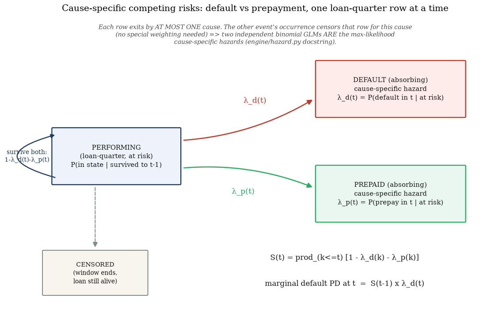
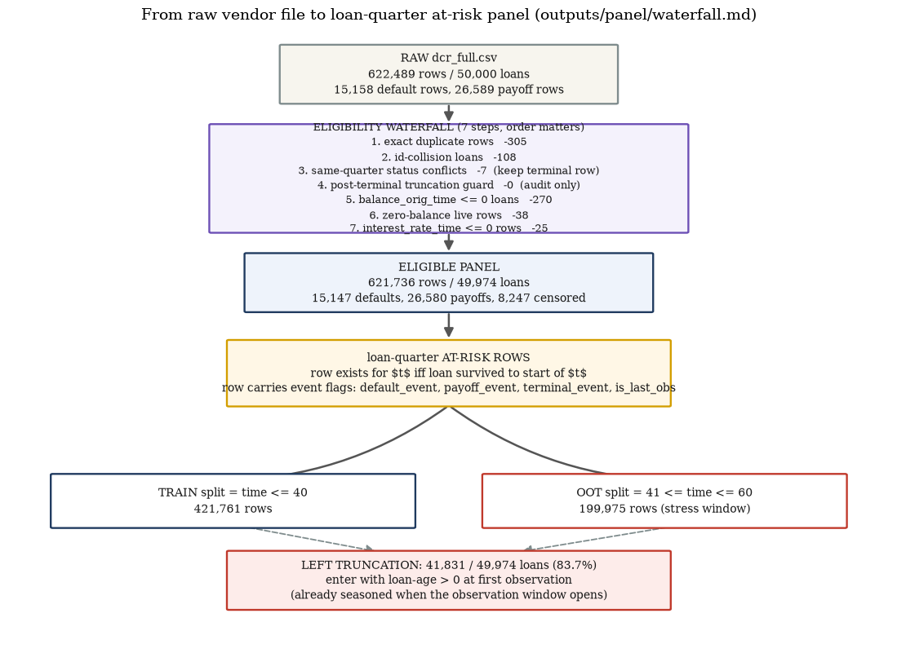
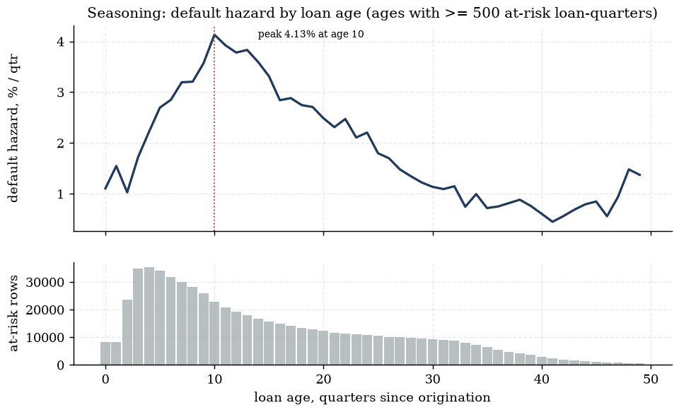
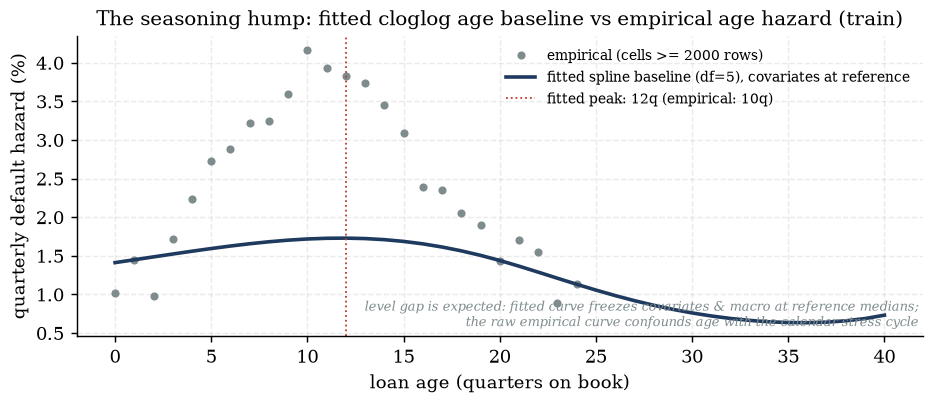
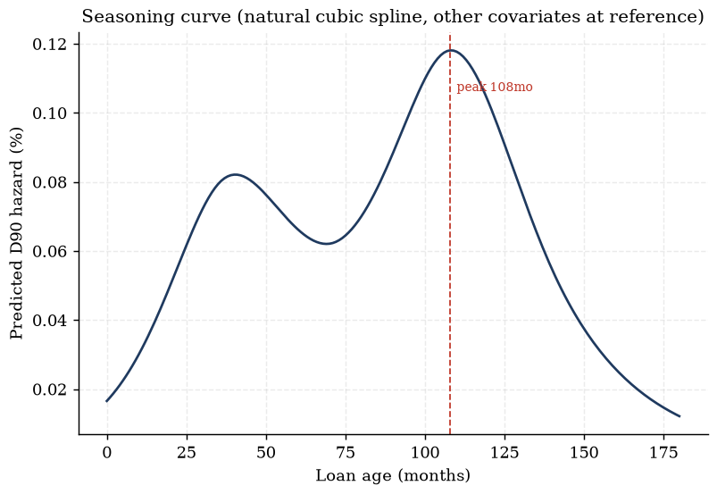
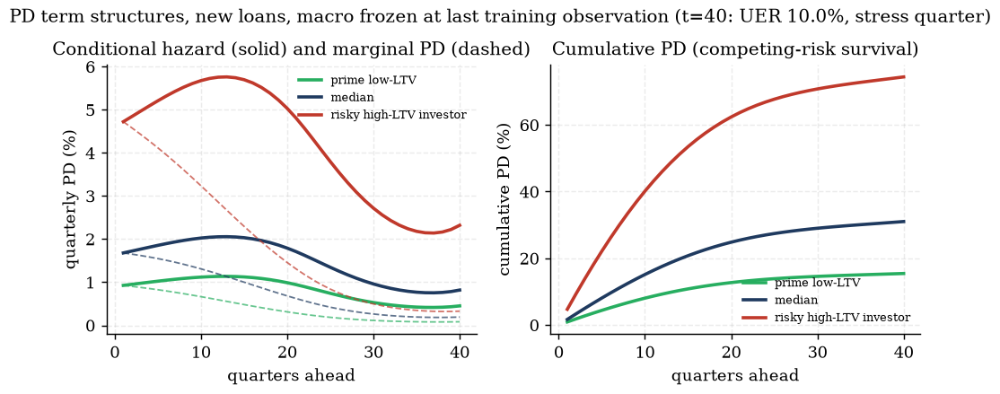
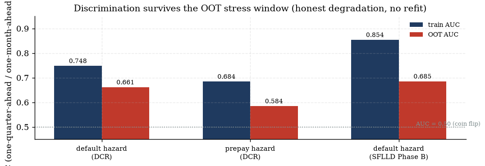
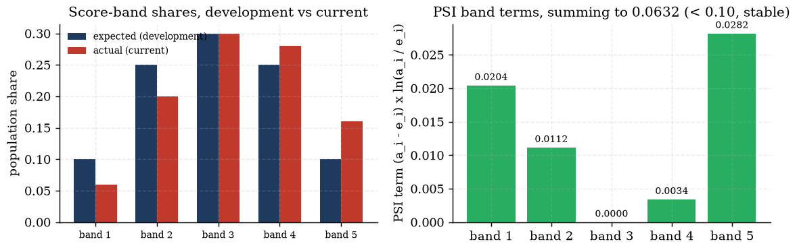

From the continuous-time proportional-hazards integral to the discrete-time cloglog PD engine: competing risks, panel construction, the seasoning hump, and validation
IFRS9 ECL Study-Notes Compendium — Chapter 3 of 13. Compiled from knowledge/sources/ifrs9_credit_risk_notes.md §6.2, engine/hazard.py, data/panel/build_panel.py, tests/fixtures/compute_validation.py, outputs/hazard/{fit_stats.md,hazard_ratios.md}, outputs/panel/waterfall.md, outputs/eda/eda_report.md, outputs/variable_dictionary.md, and outputs/freddie/hazard/hazard_report.md on 2026-07-19.
Chapter 2 took the hazard curve $\lambda_t$ as a given input to the ECL sum. This chapter builds it.
The discrete-time hazard model is the workhorse PD engine for retail portfolios with a loan-month (or
loan-quarter) panel: one binary regression, fit on at-risk rows, produces the entire term structure
of conditional default probabilities in a single coherent object — no separate model per horizon, no
ad-hoc extrapolation. We derive the model's link function from the continuous-time proportional-hazards
assumption it approximates (not just state it), extend Chapter 2's survival identity to the
competing-risk case (default vs prepayment), walk exactly how this project's own loan-quarter panel is
built and why loans that enter the observation window already seasoned need special handling, read the
champion coefficient table variable by variable, and close with the three-pillar validation story: how
well the model discriminates, how well it is calibrated, and how stable the scored population is over
time. Source anchor: knowledge/sources/ifrs9_credit_risk_notes.md §6.2 (3.1–3.2);
project evidence from engine/hazard.py, data/panel/build_panel.py and
outputs/hazard/ (3.3–3.7); validation theory and fixtures
from tests/fixtures/compute_validation.py (3.8–3.10).
Scope note — wholesale transition matrices and corporate/LDP PD. The source notes' §6 also covers
rating-transition Markov matrices (§6.3, cohort/generator methods, the embedding problem) for wholesale
books, and §7 covers corporate/low-default PD (Merton structural distance-to-default, shadow ratings,
Pluto–Tasche). Both are genuine alternative PD-modelling families, but this capstone is retail-mortgage-only
end to end — the project has no wholesale rating book and no corporate exposures to apply either to. They are
flagged here as a scope contrast, not expanded: the Merton distance-to-default derivation (backlog item
D-4, tests/fixtures/compute_pd.py's merton_dd/merton_pd_pct)
is left for a later top-up pass rather than expanded in this build (see this chapter's declared
simplifications). Everything from here on is the discrete-time hazard family this project actually uses.
3.1 From continuous-time hazards to the discrete-time cloglog link
The source notes' THEOREM box for the discrete-time hazard model (§6.2) states the model's link
function without derivation: "fit a binary GLM on at-risk rows with a logit or complementary
log-log link... The cloglog link is the exact grouped-duration analogue of the continuous-time Cox
model." This section derives that claim from first principles (derivation backlog item
D-3, flagged explicitly for expansion) — why cloglog, specifically, and not logit,
is the link implied by an underlying continuous-time hazard.
Definitions.
$T$ — the (continuous) random time to the event of interest (default). $h(t\mid x)$ — the
continuous-time hazard: $h(t\mid x)=\lim_{\Delta\to0}\dfrac{P(t\le T<t+\Delta\mid T\ge t,\,x)}{\Delta}$,
the instantaneous event rate at $t$ given survival to $t$ and covariates $x$.
$S_c(t\mid x)=P(T>t\mid x)$ — the continuous-time survival function. Standard identity (from
$\frac{d}{dt}S_c(t)=-h(t)S_c(t)$, a first-order linear ODE solved by an integrating factor):
$S_c(t\mid x)=\exp\!\big(-\int_0^t h(u\mid x)\,du\big)$.
Proportional-hazards (Cox) assumption: $h(t\mid x)=h_0(t)\exp(x'\beta)$ — covariates
scale the hazard multiplicatively, and this scaling is constant over time; $h_0(t)$, the
baseline hazard, carries all the time-shape (the seasoning hump, §3.5).
$\lambda(t\mid x)=P(t\le T<t+1\mid T\ge t,\,x)$ — the discrete-time hazard actually
fitted: the probability the event falls inside the one-period interval $[t,t+1)$, given survival to $t$
— exactly Chapter 2's $\lambda_t$, now with covariates made explicit.
Derivation — the discrete hazard implied by a continuous-time proportional-hazards process.
1. The event survives the whole interval $[t,t+1)$ with
probability $P(T\ge t+1\mid T\ge t,x)=\dfrac{S_c(t+1\mid x)}{S_c(t\mid x)}=\dfrac{\exp(-\int_0^{t+1}h(u\mid x)du)}{\exp(-\int_0^t h(u\mid x)du)}
=\exp\!\Big(-\int_t^{t+1}h(u\mid x)\,du\Big)$ — the ratio of two survival functions collapses to the
integral of the hazard over just the one interval, by the exponent-subtraction rule for $\exp$.
2. Substitute the proportional-hazards assumption
$h(u\mid x)=h_0(u)\exp(x'\beta)$. Because $x'\beta$ does not depend on $u$, it factors out of the integral:
$\displaystyle\int_t^{t+1}h_0(u)\exp(x'\beta)\,du=\exp(x'\beta)\int_t^{t+1}h_0(u)\,du$.
3.Piecewise-constant-baseline reduction.
Define $\alpha_t=\ln\!\Big(\int_t^{t+1}h_0(u)\,du\Big)$ — the log of the baseline's cumulative hazard over
interval $t$ specifically. This is not an approximation of $h_0$ itself; it is simply naming the one
number the interval-survival formula actually needs, so that $\int_t^{t+1}h_0(u)\,du=\exp(\alpha_t)$ by
construction. $\alpha_t$ is a free, interval-specific intercept — exactly what a flexible baseline
(a spline in loan age, §3.5) is fitted to recover.
5. By definition the discrete hazard is the complementary
probability: $\lambda(t\mid x)=1-P(T\ge t+1\mid T\ge t,x)=1-\exp\!\big(-\exp(\alpha_t+x'\beta)\big)$ —
this is exactly the source notes' asserted formula, now derived.
6.Isolating the link. Rearrange:
$1-\lambda=\exp(-\exp(\alpha_t+x'\beta))\;\Rightarrow\;\ln(1-\lambda)=-\exp(\alpha_t+x'\beta)\;\Rightarrow\;
-\ln(1-\lambda)=\exp(\alpha_t+x'\beta)\;\Rightarrow\;\ln\big(-\ln(1-\lambda)\big)=\alpha_t+x'\beta$.
The left-hand side, $\operatorname{cloglog}(\lambda):=\ln(-\ln(1-\lambda))$, is the
complementary log-log link — and step 6 shows it is not a convenient choice among
several link functions but the exact algebraic consequence of a continuous-time proportional
hazard, grouped into discrete intervals with a piecewise-constant baseline.
Worked check — cloglog vs logit, and why they are near-indistinguishable for a rare event.
$\operatorname{logit}(\lambda)=\ln\!\big(\lambda/(1-\lambda)\big)$ has no equivalent continuous-time
derivation — it is the natural link for a genuinely Bernoulli (one-shot) outcome, not a grouped-duration
hazard. For small $\lambda$, $\ln(1-\lambda)\approx-\lambda$, so
$\operatorname{cloglog}(\lambda)=\ln(-\ln(1-\lambda))\approx\ln(\lambda)$, and
$\operatorname{logit}(\lambda)=\ln(\lambda)-\ln(1-\lambda)\approx\ln(\lambda)+\lambda\approx\ln(\lambda)$
too — the two links agree to first order as $\lambda\to0$. Computing both exactly at several $\lambda$
(script: this chapter's scratch derive_cloglog.py):
$\lambda$
cloglog$(\lambda)$
logit$(\lambda)$
difference
1.0%
−4.60015
−4.59512
−0.00503
2.7% (DCR's quarterly hazard)
−3.59826
−3.58455
−0.01372
5.0%
−2.97020
−2.94444
−0.02576
10.0%
−2.25037
−2.19722
−0.05314
30.0%
−1.03093
−0.84730
−0.18363
At the DCR panel's actual quarterly event rate (default hazard around 2.7% per quarter,
wiki/pages/hazard-model.md), the two links differ by only 0.014 on the linear-predictor scale
— small enough that engine/hazard.py's IRLS solver warm-starts the cloglog fit from the
logit solution (module docstring: "for rare events logit and cloglog coefficients nearly coincide...
from the default start the cloglog IRLS diverged"). The gap widens sharply as $\lambda$ grows
($0.18363/0.00503\approx37\times$
larger at 30% than at 1%) — the two links are a good local approximation of each other only in the
rare-event regime this project's default hazard actually sits in.
What this means. The cloglog link is not an arbitrary modelling choice among interchangeable
alternatives — it is the specific transform that makes a discrete-time GLM's fitted $\exp(\beta)$ a
genuine, time-invariant hazard ratio, in the same sense as a fitted Cox-model hazard
ratio, provided the underlying process really is proportional-hazards in continuous time. This is exactly
why outputs/hazard/hazard_ratios.md can report $HR=\exp(\text{coef})$ columns and interpret
them as multiplicative shifts in the hazard rate (§3.7) — that interpretation rests on the derivation
above, not on convention. A logit fit's $\exp(\beta)$ is an odds ratio for the discrete interval
chosen, which is not guaranteed to stay the same number if the interval length changes (a quarter vs a
month) — cloglog's hazard-ratio interpretation is interval-length-consistent by construction (the
baseline $\alpha_t$ absorbs the interval-length effect, leaving $\beta$ to carry only the covariate
scaling).
Gotcha — "cloglog and logit are basically the same link" is only true for rare events. The 0.014
gap at the DCR panel's actual ~2.7% quarterly hazard makes the two links practically interchangeable
here, which is exactly why the logit-warm-start trick works reliably in this project. That
does not generalise: at a 30% hazard (plausible for, say, a severely stressed sub-pool, or a monthly
delinquency-bucket roll-rate rather than a quarterly default hazard) the gap is 13× larger and the
two links can produce materially different fitted coefficients and hazard-ratio interpretations. Always
check the modelled event's base rate before assuming the links are interchangeable.
Check yourself.
What assumption converts the continuous-time hazard integral $\int_t^{t+1}h_0(u)\exp(x'\beta)\,du$
into a closed-form expression usable by a GLM, and what does it let you name $\alpha_t$?
Answer
The piecewise-constant-baseline reduction: defining
$\alpha_t=\ln\big(\int_t^{t+1}h_0(u)\,du\big)$ makes the interval's baseline cumulative hazard a single
free number per interval (equivalently, $\int_t^{t+1}h_0(u)\,du=\exp(\alpha_t)$) — no further assumption
about the shape of $h_0$ within the interval is needed, only that the covariate effect $x'\beta$ is
constant within it (which the proportional-hazards assumption already supplies).
Why is $\exp(\beta)$ from a cloglog fit called a genuine "hazard ratio" while $\exp(\beta)$ from a
logit fit on the same data is called an "odds ratio" instead?
Answer
The derivation shows cloglog's linear predictor $\alpha_t+x'\beta$ equals the log of
the continuous-time cumulative hazard over the interval — so $\exp(\beta)$ is exactly the multiplicative
factor the proportional-hazards model puts on the underlying continuous-time hazard rate, invariant to
how the interval is chopped. Logit has no such continuous-time derivation; its $\exp(\beta)$ is the
ratio of event-vs-no-event odds for whatever discrete interval was chosen, which is a different (and
interval-length-dependent) quantity.
At a quarterly hazard of 2.7% the cloglog/logit gap is only 0.014. Does this mean it is always safe to
substitute a logit fit for a cloglog fit on this project's data?
Answer
No — it is safe only in the same rare-event regime that produced the small gap. The
worked table shows the gap grows to 0.18 at a 30% hazard (roughly 13× larger); a delinquency-ladder
roll-rate model or a severely stressed sub-population with much higher period hazards would not enjoy the
same near-equivalence, and the two links' fitted coefficients would diverge materially.
3.2 The survival function under competing risks
Chapter 2 §2.2 derived $S(t)=\prod_{k\le t}(1-\lambda_k)$ for a single exit route (default only).
A mortgage panel has two competing exits — default and prepayment — and Chapter 2 §2.6
already relied on the extended, competing-risk version of $S(t)$ without deriving it. This section supplies
that derivation.
Derivation — survival with two competing exits.
1. Define the two cause-specific hazards:
$\lambda_d(t)=P(\text{default in }t\mid\text{at risk at }t)$ and
$\lambda_p(t)=P(\text{prepay in }t\mid\text{at risk at }t)$. In this discrete-time, at-most-one-event-per-period
setup, every at-risk loan-period ends in exactly one of three mutually exclusive, exhaustive outcomes:
default, prepay, or continue performing.
2. Because the three outcomes exhaust the probability space
for period $t$, their probabilities sum to 1: $\lambda_d(t)+\lambda_p(t)+P(\text{continue through }t)=1$,
so $P(\text{continue through }t\mid\text{at risk at }t)=1-\lambda_d(t)-\lambda_p(t)$.
3. Apply the exact same chain-rule argument as Chapter 2
§2.2 — "survive to $t$" is the intersection of $t$ one-period continuation events, so by the chain rule
of conditional probability (which needs no independence assumption between periods, or between the two
causes):
$$S(t)=P(T_{\text{exit}}>t)=\prod_{k=1}^{t}P(\text{continue through }k\mid\text{at risk at }k)=\prod_{k=1}^{t}\big(1-\lambda_d(k)-\lambda_p(k)\big).$$
4. The marginal default PD at $t$ is unchanged in form from
Chapter 2: $S(t-1)\lambda_d(t)$ — but $S(t-1)$ now already reflects loans lost to either exit
route in periods $1,\ldots,t-1$. This is precisely Chapter 2 §2.6's double-counting rule: because
$S(t-1)$ already carries the prepayment attrition, $EAD_t$ must never be scaled down by a second
prepayment-survival factor.
Cause-specific hazards do not require the two causes to be statistically independent.engine/hazard.py's docstring states the estimation logic precisely: each cause-specific hazard
is fit by treating the other event's occurrence as right-censoring for that cause — a loan's rows
for the default hazard simply end at whichever event (default or prepay) happens first, carrying $y=0$ for
that cause if the terminal event was the other one. Under this construction "the likelihood factorises
across causes and two separate binomial GLMs are the maximum-likelihood estimator" — no joint distributional
assumption about the two latent event times is needed to estimate $\lambda_d(t)$ and $\lambda_p(t)$
separately; they only need to be recombined correctly afterwards, which step 3 above is precisely how
pd_term_structure() does it.

Exhibit 3.1 — Cause-specific competing risks: one loan-quarter row exits by at
most one cause, and censoring (the window ending) is not an exit at all
(engine/hazard.py, regenerated in matplotlib as a box-arrow state diagram).
Worked check — the DCR "prime low-LTV" profile's first two periods
(outputs/hazard/pd_term_structure.csv, macro frozen at the last training observation,
t=40, a stress quarter — one of the three reference profiles analysis/fit_hazard.py builds;
§3.11's widget instead centres on the "median" profile).
At period 1 (loan age 0): $\lambda_d(1)=0.92724\%$, $\lambda_p(1)=4.05456\%$, so
$S(1)=1-0.0092724-0.0405456=0.95018$ — matching the CSV's survival column exactly. At period 2
(loan age 1): $\lambda_d(2)=0.95153\%$, marginal default PD $=S(1)\times\lambda_d(2)=0.95018\times0.0095153=0.90413\%$
— matching the CSV's marginal_pd column (0.90413%) to 5 decimal places.
What this means. The competing-risk extension changes nothing about the logic of survival —
it is still a product of one-period continuation probabilities, still derived from the chain rule alone —
it only changes what "continuation" means per period (surviving both exits, not one). Every
downstream identity that used $S(t)$ (the ECL sum, the gross-up factor, the double-counting rule) is
unaffected in form; only the input curve changes. This is exactly why Chapter 2 could state the
double-counting rule without re-deriving $S(t)$ from scratch — this section is that missing derivation,
supplied where it belongs methodologically (hazard modelling), one chapter later.
Gotcha — "cause-specific hazard" is not the same object as "the probability this loan defaults, full
stop." $\lambda_d(t)$ answers "given the loan is still at risk (neither defaulted nor prepaid yet),
what is the chance it defaults this period?" — it is silent about what happens to loans that
already exited via prepayment. A different quantity, the cumulative incidence function
(sometimes fit via a subdistribution/Fine–Gray hazard), directly answers "what fraction of the
original cohort will ever default, accounting for the fact that some competing exits remove
loans from being able to default at all?" — that is exactly what $S(t-1)\lambda_d(t)$, summed over $t$,
already computes (the marginal PD term structure, Chapter 2 §2.1). This project deliberately uses
plain cause-specific hazards recombined via survival ("no special weighting, subdistribution adjustment,
or IPCW is applied" — engine/hazard.py docstring) because that recombination is exactly what
the ECL sum needs; a Fine–Gray-style subdistribution hazard would be the wrong tool here, not a more
sophisticated version of the same one.
Check yourself.
In the discrete-time competing-risk setup, what are the three mutually exclusive outcomes for an
at-risk loan-quarter, and why must their probabilities sum to 1?
Answer
Default, prepay, or continue performing — because in a single discrete period a
loan that is at risk (has not yet exited) does exactly one of these three things, so by the axiom that
probabilities of an exhaustive partition sum to 1: $\lambda_d(t)+\lambda_p(t)+P(\text{continue})=1$.
Does fitting $\lambda_d(t)$ and $\lambda_p(t)$ as two separate binomial GLMs require assuming default
and prepayment are statistically independent processes?
Answer
No. Each cause-specific hazard is defined and estimated using only the at-risk rows
for that cause (treating the other event's occurrence as censoring for this cause) — the discrete-time
likelihood factorises across causes under this construction regardless of any dependence between the two
underlying event-time processes; no joint distributional assumption is needed to get consistent
cause-specific estimates.
Chapter 2 §2.6 states that EAD must never be scaled by a prepayment-survival factor when
$S(t)$ is already the competing-risk survival. Using this section's derivation, explain why in one
sentence.
Answer
Because $S(t-1)=\prod_{k<t}(1-\lambda_d(k)-\lambda_p(k))$ already removes, period
by period, every loan that exited via either default or prepayment — the population still contributing
to $S(t-1)\lambda_d(t)$ has already had prepayment attrition subtracted once; multiplying $EAD_t$ by a
second prepayment-survival factor would apply that same attrition twice.
3.3 Building the panel: at-risk rows and the eligibility waterfall
A discrete-time hazard model is fit on a loan-quarter panel: one row per loan per
quarter it is at risk, with an event flag. Getting this panel right — so that a plain binomial GLM on
at-risk rows really is the discrete-time survival likelihood — is data/panel/build_panel.py's
job. This project's raw source is the Baesens–Rösch–Scheule / Deep Credit Risk 50,000-loan
US mortgage panel (dcr_full.csv), which the source notes themselves flag as carrying
"realistic left truncation & right censoring" (§5.1) — exactly the two panel-construction hazards
this section and the next work through.
At-risk logic (the definition a hazard-model panel must satisfy). A loan contributes exactly one
row to the panel for quarter $t$ if and only if it has survived (neither defaulted nor prepaid) through
$t-1$ and is under observation at $t$. The row carrying the loan's terminal event (if any) is the
last row contributed for that loan — no rows exist after a loan's first terminal event,
by construction (data/panel/build_panel.py's post-terminal-truncation guard, step 4
below). A binomial GLM fit with $y=$ event flag on exactly this row set is the discrete-time survival
likelihood under non-informative censoring (engine/hazard.py docstring) — this is precisely
what makes §3.1's cloglog-link derivation applicable to a plain GLM fit.
The DCR eligibility waterfall (outputs/panel/waterfall.md). Raw file:
622,489 rows / 50,000 loans (15,158 default rows, 26,589 payoff rows). Seven ordered steps
(order matters — each step's counts are taken sequentially on the previous step's output):
5 ids each interleave two distinct loans under one id — whole id dropped
3
same-quarter status conflicts
−7
terminal row kept (preserves the event), shadow status-0 row dropped
4
post-terminal truncation guard
−0
generic guard, audits that steps 1–3 already resolved every anomaly
5
balance_orig_time ≤ 0 loans
−270
18 loans: origination balance missing-coded 0 ⇒ updated LTV incomputable for the whole loan
6
zero-balance live rows
−38
non-terminal row, balance ≤ 0 ⇒ missing-coded, not a real state
7
interest_rate_time ≤ 0 rows
−25
current note rate missing-coded ⇒ prepayment incentive incomputable
Final panel: 621,736 rows / 49,974 loans — 15,147 defaults, 26,580 payoffs, 8,247
right-censored (still alive at $t=60$, the window's end). Split chronologically (never shuffled):
train $t\le40$ — 421,761 rows; OOT $41\le t\le60$ — 199,975
rows (the stress-and-aftermath window, §3.8). A further 3,343 train rows are flagged
lag_warmup (quarters $t<6$, where the 4-quarter unemployment change is undefined) and
excluded at model-fit time only, leaving 418,418 rows actually used to fit each hazard
(outputs/hazard/fit_stats.md's "n (fit)").

Exhibit 3.2 — From the raw vendor file to the loan-quarter at-risk panel: every
waterfall step's row count is real, from outputs/panel/waterfall.md
(regenerated in matplotlib as a box-arrow flowchart).

Exhibit 3.3 — At-risk logic made visible: the number of loan-quarter rows still
at risk shrinks every age (bottom panel, bars) as loans exit via default/prepay/censoring, while the
empirical default hazard among the rows still at risk traces the seasoning hump (top panel)
(outputs/eda/eda_report.md, PASS check #2, project exhibit).
What this means. Every dropped row in the waterfall has a stated, auditable reason tied to a
specific data-quality defect (a missing-coded zero, a duplicate, an id collision) — none are dropped for
convenience, and every step's row/default/payoff counts are reconciled in build_panel.py's own
self-checks (e.g. one_terminal_row_per_loan, key_unique). The bottom panel of
Exhibit 3.3 is the at-risk-row count declining with age — this is exactly the denominator every
$\lambda(t\mid x)$ estimate at age $t$ is computed against, and it shrinks for legitimate survival reasons
(defaults, prepayments, and eventually right-censoring at the window's end), not because of any panel
construction artefact.
Gotcha — a censored loan's rows are not "wasted" or requiring special down-weighting. A loan alive
at $t=60$ (8,247 of them) simply stops contributing rows after its last observed quarter — it needs no
extra censoring indicator, weight, or correction term. Because each row already carries $y=0$ for every
quarter the loan was at risk and did not default, its full non-event history is already in the likelihood;
right censoring is handled by construction, purely by not manufacturing rows for quarters that
were never observed. The one thing to get right is the flip side — never accidentally impute an event or
a "definitely survived to maturity" row for a censored loan past its last observed quarter.
Check yourself.
Why does step 4 (the post-terminal truncation guard) drop exactly 0 rows, and why is that fact
still worth recording in the waterfall table?
Answer
Steps 1–3 already resolved every one of the raw file's documented anomalies
(the 3 duplicated terminal rows, the 5 id-collision loans, the 1 same-quarter status conflict) —
step 4 is a generic guard that would catch any remaining post-terminal row, and finding zero is
the audit evidence that steps 1–3 were sufficient, not an assumption.
A loan-quarter panel needs 621,736 rows across 49,974 loans to fit two hazards, but only 418,418 rows
actually enter the fit for each. Where did the other 3,343 train rows go, and why are they excluded only
at fit time rather than dropped from the panel entirely?
Answer
They are the lag_warmup rows (calendar quarters $t<6$, 3,343 of
them per outputs/panel/waterfall.md) where the 4-quarter unemployment change is
structurally undefined — they are kept in the panel (flagged, not deleted) because they are still valid
at-risk observations for other purposes, but excluded specifically from hazard-model fitting because a
required covariate has no value there.
Why is the train/OOT split done strictly by calendar quarter ($t\le40$ vs $t>40$) rather than by
randomly shuffling loan-quarter rows into the two sets?
Answer
A hazard model deployed in production is always scored on the future relative to
its training data — a chronological split (train on the first ~2/3 of calendar time, score on the last
third, which contains the stress episode) mimics that deployment reality and is the only split that can
honestly test degradation under a genuine, unseen macro regime; a random shuffle would let training rows
from the same stress period leak into the fit, overstating how well the model would have performed if
it truly had never seen the stress quarters.
3.4 Left truncation on the DCR panel
Right censoring (a loan still alive when the observation window ends) is the more familiar
survival-analysis hazard. Left truncation is its mirror image at the start of
the window: a loan that originated before the panel begins observing it enters already seasoned —
its true loan age at first observation is greater than zero.
What ignoring left truncation would bias, reasoned from the likelihood.
1. The discrete-time hazard likelihood at age $a$ conditions
on "at risk at age $a$" — which means both alive at age $a$ andunder observation at age $a$. A loan that originated at true age $-25$ relative to the panel's
start (i.e. is already 25 quarters old when the window opens) was never under observation for ages
$0,\ldots,24$ — it must not contribute an at-risk row, an event, or a censoring indicator for those
unobserved ages at all.
2. The correct treatment (data/panel/build_panel.py,
mirroring engine/hazard.py's docstring) is to let that loan's first contributed row be at its
true age $a=25$, with loan_age = time - orig_time computed from the loan's
actual, possibly pre-window, origination quarter — "a loan entering at age $a$ simply contributes at-risk
rows from age $a$ onward, which is the correct conditional-on-survival-to-entry likelihood."
3.The bias if ignored: a naive alternative
— relabelling each loan's first observed quarter as "age 0" — would (a) systematically compress
the age axis for every left-truncated loan, smearing the fitted seasoning-hump's true peak location, since
a loan that is actually 25 quarters old at first observation gets mislabelled as newly originated; and
(b) introduce a survivorship/immortal-time distortion: loans present at the window's start are, by
definition, exactly the pre-window originations that already survived their unobserved early
quarters without defaulting — silently attributing that unconditional survival to "what the model explains
from age 0" (which it never actually observes) confounds true age-hazard shape with a self-selected,
survived-so-far sub-population that is not exchangeable with loans genuinely originated inside the window.
How much of the DCR panel is actually left-truncated (scratch script
derive_left_truncation.py, run directly against data/processed/panel.parquet —
not one of the 133 golden fixtures, a direct data computation):
left-truncated loans41,831 / 49,974 (83.7%)
age at entry, mean4.30 quarters
age at entry, median2.0 quarters
age at entry, max70 quarters
The overwhelming majority of loans in this panel enter already seasoned — consistent with
outputs/eda/eda_report.md's own note that origination times run "down to $-40$" (i.e. some
loans originated 40 quarters before the observation window opens). build_panel.py's own
self-check, left_truncation_consistent, confirms every loan's first observed quarter
equals its recorded first_time (49,974 / 49,974 loans) — i.e. left-truncated entrants really
do enter the risk set exactly at their true age, never backdated to age 0.
What this means. Left truncation is handled in this panel by the same mechanism as right censoring
— simply not manufacturing rows (or an implicit age-0 relabelling) for quarters that were never observed.
The EDA suite's own vintage-curve exhibit flags the practical consequence directly: pre-window cohorts
"miss their earliest ages," so any cumulative-default-by-vintage comparison must account for which
cohorts had their full early history observed and which did not — exactly the kind of comparison
§3.5's seasoning-hump exhibit is careful to build only from the age-conditional hazard (which correctly
uses every loan's true age), not from a naive "quarters since first observed" axis that would conflate
truncation with the genuine seasoning effect.
Gotcha — "first observed" is not "loan age zero." It is tempting, when a raw panel's origination
date sits before the sample window and thus looks unusable, to just start counting age from the first row
you can see. That is exactly the biased alternative step 3 above describes. The fix is not to drop
left-truncated loans (that would throw away 83.7% of the panel and bias the remaining sample
toward recent, short-lived originations) — it is to compute true age from true origination time and let
the at-risk set naturally start wherever that age is, which is what loan_age = time - orig_time
already does here.
Check yourself.
A loan originated 25 quarters before the panel's observation window opens. Under the correct
left-truncation treatment, at what age does its first panel row appear, and what age-range likelihood
contribution does it make for ages 0–24?
Answer
Its first row appears at age 25 (its true age when the window opens); it makes
no likelihood contribution at all for ages 0–24 — those quarters were never observed, so
the loan is simply absent from the at-risk set at those ages, neither as an event nor as a censored
observation.
Why would relabelling every loan's first observed quarter as "age 0" bias the fitted seasoning-hump
peak, rather than just being a harmless renaming?
Answer
Because 83.7% of loans in this panel have a true age at first observation greater
than 0 (mean 4.3 quarters, max 70) — relabelling those loans' first rows as age 0 would compress or
shift their true age axis, mixing genuinely-new-loan behaviour with already-seasoned-loan behaviour
under the same "age 0" label, distorting exactly the age-hazard shape the seasoning-hump analysis
(§3.5) is trying to recover.
Does correctly handling left truncation mean dropping the 83.7% of loans that are left-truncated from
the panel?
Answer
No — dropping them would both waste the large majority of the data and bias the
remaining sample toward recently-originated, necessarily short-lived loans. The correct treatment keeps
every loan and lets it enter the at-risk set at its true age, contributing exactly the ages it was
genuinely observed at — no loan needs to be excluded, only correctly aged.
3.5 The seasoning hump: DCR's ~12-quarter peak and the SFLLD 42–48-month corroboration
The baseline hazard $\alpha_t$ (§3.1) is fitted as a natural cubic spline in loan_age
(cr(loan_age, df=5), engine/hazard.py) — flexible enough to reproduce the classic
retail-mortgage seasoning hump: default risk rises over the first few years on book as
weaker underwriting reveals itself, peaks, then declines as the pool of loans still on book increasingly
consists of survivors who have already proven themselves through several years of scheduled payments.

Exhibit 3.4 — DCR: fitted cloglog age-baseline spline (peak 12 quarters) against
the raw empirical age-hazard scatter (peak 10 quarters); the level gap is expected since the fitted curve
freezes covariates and macro at reference medians while the raw curve confounds age with the calendar
stress cycle (outputs/hazard/age_baseline.png, project exhibit).
DCR's seasoning peak, exactly. Fitted spline peak: 12 quarters. Empirical peak
(cells with $\ge500$ at-risk rows, avoiding sparse-age noise): 10 quarters, with hazard
rising from 1.11% to a peak of 4.13% then declining to 1.37% by the oldest reliable age
bin (outputs/eda/eda_report.md PASS check #2; outputs/hazard/fit_stats.md: "Seasoning
peak: fitted 12q vs empirical 10q (tolerance 8q; plausible window (4, 18))"). The 2-quarter fitted-vs-empirical
gap is well inside the project's own pre-declared tolerance, and the level gap between the two curves in
Exhibit 3.4 is separately explained (fitted curve freezes covariates/macro; empirical curve does not).
The SFLLD Freddie Mac refit (Chapter 11–12's data, outputs/freddie/hazard/hazard_report.md)
is an independent panel — real loan-level mortgage data (not the DCR's synthetic panel), a monthly (not
quarterly) clock, a different covariate set (adds DTI, occupancy, loan purpose, channel), a different and
much larger sample (17.7m training loan-months vs the DCR's 418k loan-quarters), and a different historical
period. If the seasoning hump reflects a genuine mortgage-market regularity rather than an artefact of one
dataset's construction, an independently-fit model on independent data should find a peak in a similar
part of the loan's life.

Exhibit 3.5 — SFLLD Phase-B fitted seasoning curve (natural cubic spline,
monthly D90 hazard); the labelled 108-month peak is a documented cohort artefact (see interpretation
below), not the seasoning effect itself (outputs/freddie/hazard/seasoning_curve.png, project exhibit).
What this means — reading the SFLLD corroboration correctly.outputs/freddie/hazard/hazard_report.md states the comparison directly: "the EMPIRICAL
train-window hazard-by-age profile is a single hump peaking in the 42–48mo bin (0.256% monthly),
consistent with the DCR champion's ~12-quarter peak." Converting units for a direct comparison: DCR's
12 quarters $=36$ months; SFLLD's empirical peak bin is 42–48 months (midpoint 45). The two
independently-built, independently-fit hazard models — different data source, different clock, different
covariates, different historical period — locate the seasoning peak in the same broad window,
roughly 3–4 years on book, not identical months but close enough to read as corroboration of a real
mortgage-market regularity rather than two unrelated numbers. The report is equally explicit about what
the SFLLD chart's fitted-curve second peak (near 108 months) is not: it states the
higher late-age peak is unobserved-cohort-quality — SFLLD training rows with age $\ge96$ months come
exclusively from 2005–2008 crisis vintages (later vintages are too young by the 2016-12 training
cutoff to reach that age), so the spline's late-age rise reflects vintage composition riding on the age
axis, not a second seasoning effect — and any reading of the curve past ~96 months should be treated with
that caution.
Gotcha — a fitted spline's global peak is not always the seasoning peak. Exhibit 3.5's fitted
curve has a local hump around 30–45 months (consistent with the true seasoning effect and with the
DCR corroboration above) and a larger, later peak near 108 months that a naive read might call
"the seasoning peak" simply because it is the curve's global maximum. The hazard report's own diagnosis —
tracing which vintages actually populate the training rows at that age — is the only way to tell a genuine
age effect from a vintage-composition artefact riding on the same age axis; never trust a spline's global
maximum without checking what population actually supports each region of the fitted curve.
Check yourself.
Convert the DCR's fitted 12-quarter seasoning peak to months, and state how it compares to SFLLD's
empirical 42–48-month peak bin.
Answer
12 quarters = 36 months, versus SFLLD's empirical 42–48-month bin (midpoint
45 months) — close (both land in the roughly 3–4-year-on-book window) but not identical, which is
exactly what "corroboration" from two independently-built models should look like: the same broad
regularity, not an exact digit-for-digit match.
Why does the SFLLD fitted seasoning curve show a second, higher peak near 108 months, and why should a
reader not treat that as a second real seasoning effect?
Answer
Training rows with age ≥96 months come exclusively from 2005–2008 crisis
vintages (every later vintage is too young to reach that age within the 2016-12 training cutoff) — the
spline's late-age rise is absorbing that vintage's distinctively higher risk, not measuring a genuine
second age-driven hump; the hazard report explicitly flags this and advises caution reading the curve
beyond ~96 months.
Name two ways the DCR and SFLLD hazard fits differ that make their agreement on the seasoning-peak
location more, not less, convincing as corroboration.
Answer
Any two of: different underlying data (synthetic Baesens–Rösch–Scheule
panel vs real Freddie Mac loan-level SFLLD data), different clock granularity (quarterly vs monthly),
different covariate sets, different sample sizes (418k loan-quarters vs 17.7m loan-months), and
different historical coverage periods. Agreement despite all these differences is stronger evidence of a
genuine mortgage-market regularity than agreement between two fits on the same or closely related data
would be.
3.6 Timing convention: lagged macro vs current-state exceptions
Every macro-conditioned PD model risks lookahead bias: using information that would
not actually have been available to a lender at the moment the quarter's default/prepay decision was
being made. engine/hazard.py's TIMING CONVENTION is the project's explicit, review-enforced
rule for avoiding it — and its two deliberate exceptions are worth reading carefully, because they look
at first glance like violations of the rule they sit next to.
The rule, verbatim in spirit (engine/hazard.py module docstring).
All macro regressors are lagged: uer_lag1, uer_chg4_lag1,
hpi_growth_lag1, gdp_lag1 enter the specification using only $t-k$ ($k\ge1$)
values — never the current quarter's own national aggregate. Rationale: publication delay plus economic
transmission time. No contemporaneous macro aggregate appears anywhere in either hazard specification.
Two deliberate current-quarter STATE variables — not macro regressors —
updated_ltv and prepay_incentive. Both are indexed by a current-quarter
observable, and both are accepted exceptions, for different but related reasons.
updated_ltvIndexes the collateral by the current quarter's HPI —
this is collateral indexation, a loan-level state variable (today's negative-equity trigger),
not a macro-cycle regressor. The systematic macro cycle enters the specification only through the lagged
regressors above; updated_ltv is winsorised at 300% (18 of 418,418 training rows exceed it —
residual tiny-balance data-noise artefacts, capped because the cloglog inverse link saturates and
un-winsorised IRLS diverged).
prepay_incentiveCompares the note rate to the current-quarter market
rate — the real-time moneyness of the borrower's prepayment option. Unlike UER/GDP/HPI national
aggregates, market mortgage rates are observable in real time with no publication lag, so the
current-quarter rate genuinely is in the borrower's information set when the quarter's prepayment
decision is made; lagging it would misprice the option against standard prepayment-modelling practice.
Residual caveat, accepted: rate_time is a within-quarter average, so it partially overlaps
the event window.
What this means. The distinguishing test the rule applies is not "current quarter vs lagged
quarter" as a blanket rule — it is "systematic macro aggregate" (subject to publication lag, genuinely
unknown at decision time) vs "loan-level state variable that happens to be indexed by something
observable in real time." A national unemployment rate is announced with a lag and describes the whole
economy; a borrower's own collateral value (indexed by the current HPI) and a borrower's own refinancing
incentive (indexed by the current market rate) are properties of this specific loan, right now,
that a real lender or borrower genuinely could observe in real time. Confusing these two categories in
either direction is a genuine modelling risk: lagging prepay_incentive would misprice an
option against real information already available; treating a genuinely lagged macro series as
contemporaneous would leak future information into the fit and inflate in-sample performance without any
real forecasting power. The lag construction itself (build_panel.py) uses
groupby(id).shift, completed for first rows and within-loan time gaps from a panel-internal
time→macro map, verified to agree with the raw shift to $1\times10^{-9}$ — only $t-k$ ($k\ge1$)
values are ever referenced, so there is no lookahead in the lagged block by construction, either.
Gotcha — "current-quarter" is not automatically "lookahead." A reader skimming the covariate list
and seeing updated_ltv and prepay_incentive both indexed to the current quarter,
right alongside a rule that says "lag every macro regressor," might reasonably suspect an inconsistency or
an accidental leak. It is neither — both are loan-level state variables whose real-time observability is
part of their economic definition (a negative-equity trigger and an option-moneyness signal are, by
construction, current facts about the loan), and the rule is specifically about macro
aggregates, which these are not. Any future covariate added to this specification would need
to pass the same test explicitly, per the module docstring's own instruction.
Check yourself.
What is the precise distinction the timing convention draws — "lagged vs current quarter," or
something else?
Answer
Something else: "systematic macro aggregate subject to publication lag" (always
lagged) vs "loan-level state variable indexed by a real-time-observable quantity" (may be current-quarter).
It is not a blanket current-vs-lagged rule; it is about what kind of information the variable represents
and whether that information was genuinely available at decision time.
Why would lagging prepay_incentive by one quarter actually be the wrong choice, rather
than the more conservative one?
Answer
Because the current market mortgage rate is observable in real time (unlike UER/GDP/HPI,
which are published with a delay) — the borrower's refinancing decision in quarter $t$ is genuinely made
using quarter $t$'s market rate, so using a lagged rate would misprice the option against how prepayment
decisions are actually made, understating the incentive's true real-time strength rather than being a
"safer" choice.
How does build_panel.py guarantee the four lagged macro series never leak a future value,
even for loans with within-panel time gaps?
Answer
Each lag is computed as macro(map, t-k) from a panel-internal
time→macro map (the national series are constant across loans within a quarter, so the panel itself
defines a unique time-to-macro mapping), verified to agree with a plain groupby(id).shift(k)
wherever the shifted row really is exactly $k$ quarters back, and only ever referencing $t-k$ for $k\ge1$
— so first rows and gap rows are completed from genuinely past values, never a future or contemporaneous
one.
3.7 The DCR champion coefficient table
The fitted default-hazard coefficients, read as hazard ratios $HR=\exp(\beta)$ — a genuine hazard-ratio
interpretation thanks to §3.1's derivation — on 418,418 training loan-quarters with 11,354 default
events (outputs/hazard/hazard_ratios.md, McFadden pseudo-$R^2=0.0761$).
Covariate
HR
95% CI
$p$
Economic reading
Intercept
0.2658
[0.153, 0.461]
2.4e-06
baseline level at reference age/covariates
FICO at orig. (per 100 pts)
0.6314
[0.613, 0.651]
<1e-16
ability/willingness to pay — 100 more FICO points cuts the hazard by 37%
proxies a high contractual debt-service burden in the default equation
Investor loan
1.2091
[1.143, 1.280]
5.1e-11
strategic-default propensity — no home to lose
Unemployment level (lag 1)
0.6930
[0.654, 0.734]
<1e-16
NOT the net effect alone — see below
Unemployment 4q change (lag 1)
1.8468
[1.699, 2.008]
<1e-16
labour-market momentum — must be read together with the level term
HPI growth (lag 1)
0.0318
[0.015, 0.068]
<1e-16
per full log-unit (huge apparent HR); falling house prices raise default risk
GDP growth (lag 1)
1.0895
[1.065, 1.115]
4.5e-13
flagged sign miss — see interpretation below
DOUBLE TRIGGER: LTV(10pp) × UER (centered)
0.9940
[0.989, 1.000]
3.8e-02
in-sample substitution between the two triggers — see below
Condo / planned-urban-development / single-family occupancy flags omitted from the table
above (all $p>0.14$, not statistically distinguishable from the baseline owner-occupied "other" category
at this sample size) — full 13-row table with every category:
outputs/hazard/hazard_ratios.md.
Reading the unemployment terms correctly: level + momentum, never the level alone.
The level coefficient ($HR=0.6930$, i.e. $\beta_{\text{level}}=\ln(0.6930)=-0.3668$) looks, in isolation,
like "higher unemployment lowers default risk" — economically backwards. The correct reading combines it
with the 4-quarter-momentum term ($\beta_{\text{mom}}=\ln(1.8468)=+0.6135$), because a genuine 1pp labour-market
shock moves both the level and its own 4-quarter change by 1pp simultaneously: net effect
$=\beta_{\text{level}}+\beta_{\text{mom}}=-0.3668+0.6135=+0.2467$, i.e. $HR_{\text{net}}=\exp(0.2467)=1.280$
— PD rises 28.0% per point of genuine unemployment shock, matching intuition
(outputs/hazard/fit_stats.md). The negative level coefficient in isolation is a
level-vs-momentum decomposition artefact under 0.94 in-sample collinearity between the two terms, not an
economic sign to be read on its own.
The double-trigger interaction, reconstructed from the raw coefficients. Because
center(ltv10):center(uer_lag1) uses centered variables, the LTV main-effect
coefficient ($\beta_{\text{ltv10}}=\ln(1.2250)=0.20294$) is already the marginal LTV effect at the
mean training UER (5.6%) — matching fit_stats.md's reported "+0.2029 at mean UER"
exactly. At a different UER value $u$, centering's algebra gives the marginal LTV effect as
$\beta_{\text{ltv10}}+\beta_{\text{dt}}\cdot(u-\bar{u}_{\text{UER}})$, where
$\beta_{\text{dt}}=\ln(0.9940)=-0.006018$ is the interaction coefficient. At $u=10.0\%$ (a stressed
unemployment level, e.g. the value used to anchor §3.11's widget): marginal LTV effect
$=0.20294+(-0.006018)\times(10.0-5.6)=0.20294-0.02648=0.17646$ — closely matching
fit_stats.md's reported +0.1766 (a residual gap of 0.00014: this
reconstruction uses the hazard-ratio table's coefficients rounded to 4 decimal places, while the report's
own figure was computed from full-precision fitted coefficients). The LTV slope flattens by roughly $(0.2029-0.1766)/0.2029\approx13\%$
between mean and high unemployment — the report's own reading: "the two triggers partially substitute...
the worst-LTV loans default early in the stress window," i.e. in-sample, once a loan is deep underwater
and unemployment is already high, the marginal bite of still-more LTV is somewhat smaller, not
larger — the opposite of the "double trigger amplifies" story a modeller might expect going in, reported
honestly rather than adjusted to fit the prior.
What this means — the GDP growth sign, flagged rather than glossed over.outputs/variable_dictionary.md
states GDP growth's expected sign as "PD ↓" (the activity channel: a growing economy should lower
default risk). The fitted coefficient is the opposite: $HR=1.0895$ ($p=4.5\times10^{-13}$, not a marginal
result) — conditional on the other covariates, higher GDP growth is associated with a higher
fitted default hazard in this specification. Tellingly, outputs/hazard/fit_stats.md's own
sanity-check summary line — "All economic-sign sanity checks passed (FICO down, LTV up, unemployment
shock up for default; incentive up for prepayment)" — does not mention GDP growth at all; it is quietly
excluded from the pass list rather than claimed to pass. This chapter states that omission explicitly
rather than leaving a reader to notice it unassisted: a plausible explanation is collinearity between GDP
growth and the other three macro lags over the DCR panel's relatively short (60-quarter) national macro
history, but the project has not run a decomposition confirming this, so it is recorded here as an open,
honestly-flagged anomaly — exactly the same practice the SFLLD refit uses for its own three fitted-vs-prior
sign misses (§3.5, outputs/freddie/hazard/hazard_report.md: "misses, stated rather than left
for the reader to find").
Gotcha — HPI growth's hazard ratio of 0.0318 looks catastrophic, and mostly isn't (scale, not sign).
$HR=0.0318$ appears to say "a one-unit rise in HPI growth cuts default hazard to 3% of its former level" —
alarmingly large. The catch is scale: hazard_ratios.md notes this HR is "per full log-unit" of
HPI growth (a 100% quarterly house-price move), an economically vast and never-observed change. Reading it
per a realistic 1% quarterly HPI growth requires $\exp(\text{coef}/100)$, not the raw reported HR — the
report explicitly instructs this rescaling. Always check a coefficient's stated unit before reacting to
its raw hazard-ratio magnitude, exactly the same caution §3.1's cloglog derivation flags for
interval-length-dependent link functions.
Check yourself.
Why is it wrong to read the unemployment level coefficient's $HR=0.6930$ as "PD falls when
unemployment rises"?
Answer
Because the level and 4-quarter-momentum terms are 0.94 collinear in-sample, and a
genuine unemployment shock moves both simultaneously — the level coefficient alone is a
decomposition artefact of that collinearity, not an independent economic effect; the correct net effect
of a 1pp shock sums both coefficients, giving $HR_{\text{net}}=1.280$ (PD rises), the economically
sensible reading.
Using $\beta_{\text{ltv10}}=0.20294$ and $\beta_{\text{dt}}=-0.006018$, compute the marginal LTV effect
at UER $=8\%$ (mean UER 5.6%).
Answer
$0.20294+(-0.006018)\times(8.0-5.6)=0.20294-0.01444=0.18850$ — a marginal effect
between the reported +0.2029 (at mean UER) and +0.1766 (at UER 10%), consistent with the interaction's
direction (the LTV slope flattens as UER rises above the mean).
Why does this chapter flag the GDP growth coefficient's sign explicitly instead of just reporting the
fitted number without comment?
Answer
Because its fitted sign (HR>1, PD rises with GDP growth) contradicts the
variable dictionary's stated expected sign (PD↓), and the project's own fit_stats.md sanity-check
summary silently omits GDP from its list of signs that passed — leaving the discrepancy unstated would
hide a genuine, statistically significant anomaly that a careful reader deserves to see, consistent with
this project's stated practice of disclosing fitted-vs-expected sign misses rather than smoothing over
them.

Exhibit 3.6 — The champion coefficient table in action: conditional hazard,
marginal PD, and cumulative PD term structures for three real covariate profiles, macro frozen at $t=40$
(outputs/hazard/pd_term_structure.csv, project exhibit) — the same three curves §3.11's
and §3.12's widgets recompute or read live from.
Scope note — D-9 and D-10 expanded here, ahead of Chapter 7.notes/plan/derivation_backlog.md formally assigns the binomial/Jeffreys backtest derivation
(D-9) and the PSI band-by-band derivation (D-10) to Chapter 7
(Challengers & Validation), since both draw on the same general-purpose
compute_validation.py fixture Chapter 7 also uses for its challenger-scorecard and
reliability-diagnostic material. They are expanded here instead, ahead of their nominal slot, because they
complete this chapter's own three-pillar validation story (discrimination/calibration/stability) for the
hazard model just built — the natural place a reader learning to build and read a hazard model would
want them. Chapter 7 should build on and cross-reference this derivation (e.g. applying the same
binomial/Jeffreys machinery to a challenger scorecard's own PD grades) rather than re-derive the identical
$n=1{,}000$/$PD=2\%$/$d=28$ binomial test or the same five-band PSI example from scratch.
3.8 Evaluation I: discrimination — AUC, train vs OOT
Discrimination asks a narrower question than calibration (§3.9): not "are the predicted
probabilities the right size?" but "does the model rank loans that actually default
above loans that don't?" — the property a lender needs to prioritise collections, risk-based pricing, or
staging thresholds correctly, independent of whether the absolute PD level itself is exactly right.
AUC (area under the ROC curve). $\mathrm{AUC}=P(\hat{\lambda}_{\text{event row}}>\hat{\lambda}_{\text{non-event row}})$
for a randomly drawn (event, non-event) pair of at-risk rows scored by the same model — the probability the
model ranks a genuine event above a genuine non-event. $\mathrm{AUC}=0.5$ is random ranking;
$\mathrm{AUC}=1.0$ is perfect separation. Related to the Gini coefficient by $\mathrm{Gini}=2\,\mathrm{AUC}-1$
(source notes §6.1, scorecard discrimination). outputs/hazard/fit_stats.md is explicit
about the horizon this AUC is measured over: "AUC is for the one-quarter-ahead event: per-row
predicted hazard vs the row's event flag" — a discrimination statement about the fitted
$\lambda(t\mid x)$ itself, not about any cumulative or lifetime PD built from it.

Exhibit 3.7 — Discrimination survives the out-of-time stress window for every
hazard fit in this project, with an honest, unrefit degradation from train to OOT
(outputs/hazard/fit_stats.md, outputs/freddie/hazard/hazard_report.md, regenerated in matplotlib).
The headline story. DCR default hazard: train AUC 0.7476, OOT AUC 0.6609 — an
absolute drop of 0.0867 (a relative decline of 11.6%). OOT is the strictly held-out stress-and-aftermath
window (§3.3, $t=41$–60), scored with the training-fitted model only — no refit, no peeking. DCR
prepay hazard: train 0.6839 / OOT 0.5841, a similar-sized relative decline. The SFLLD Phase-B default
hazard (a larger, richer panel, Chapter 12) reaches materially higher discrimination overall — train
0.8536 / OOT 0.6847 — yet its OOT figure lands within 0.02 of the DCR's own OOT AUC, despite a
roughly 42×-larger fit sample (17,703,723 vs 418,418 fit rows) and a finer covariate set.
What this means. A model that is only ever evaluated in-sample cannot tell you whether it has
actually learned a stable, generalising relationship or merely fit the idiosyncrasies of its training
window — the honest test is exactly what §3.3 built the chronological train/OOT split for. Both DCR
hazards' AUC drops on a genuine, unseen macro regime shift, which is expected and is not itself evidence
of a broken model — every fitted statistical relationship degrades somewhat out of sample. What matters is
that both hazards stay comfortably above the $\mathrm{AUC}=0.5$ random-ranking floor even through the
stress window (0.661 and 0.584 respectively), meaning the ranking information the model learned in calm
conditions still has real value under stress, just less of it. The SFLLD comparison is the more striking
finding: despite a vastly larger, richer dataset lifting train AUC by over 10 points (0.748
→ 0.854), the OOT AUC gain is much smaller (0.661 → 0.685) — suggesting there is a
structural ceiling on how well any hazard model, however well-fit, can discriminate through a genuine,
previously-unseen macro regime shift; more data and richer covariates buy better in-regime fit more
reliably than they buy resilience to a regime change itself.
Gotcha — AUC is a per-row, one-period statistic; it says nothing directly about lifetime or cumulative
PD accuracy. A high one-quarter-ahead AUC tells you the model ranks this quarter's events
well among at-risk rows — it is silent about whether the term structure built by compounding that hazard
over many periods (Chapter 2's $S(t)$, the gross-up factor) produces an accurate cumulative or
lifetime PD. Discrimination and calibration (§3.9) are complementary, not substitutes: a model can
rank well (high AUC) while still being systematically miscalibrated in level (over- or under-predicting the
average PD), which is exactly why validation frameworks always report both.
Check yourself.
What does an $\mathrm{AUC}=0.6609$ mean in words, precisely?
Answer
Given a randomly drawn pair of at-risk loan-quarters, one that actually defaulted
that quarter and one that did not, the model assigns the true defaulter the higher predicted hazard
about 66.1% of the time — well above the 50% a random-ranking model would achieve, but well short of
perfect separation.
Why is the OOT AUC drop from train (0.7476 → 0.6609 for default) not, by itself, evidence that the
model is broken or unusable?
Answer
Because some degradation out of sample is expected for any fitted statistical
relationship, and the OOT window here is a genuine, previously-unseen macro stress episode, not just a
different random sample of the same regime — the relevant check is whether the OOT AUC still sits well
above the 0.5 random-ranking floor (it does, at 0.661), meaning real discriminative information
survives the regime shift, just with reduced strength.
The SFLLD hazard model roughly doubles the DCR's excess-over-random discrimination in-sample (train
AUC 0.854 vs 0.748) but its OOT AUC (0.685) is barely higher than the DCR's OOT AUC (0.661). What does
this gap between the two comparisons suggest?
Answer
That richer data and covariates buy substantially better in-regime (train) fit but
much less resilience to a genuine, unseen macro regime change — suggesting a structural ceiling on how
well any hazard model of this family can discriminate through an out-of-time stress window, regardless
of how much better it fits within a single regime.
3.9 Evaluation II: calibration and stability — the PSI walkthrough
Calibration asks whether predicted probabilities are the right size, not just correctly
ranked. Population stability asks a related but distinct question: has the scored population itself
shifted enough, relative to the population the model was developed on, that its scores may no longer mean
what they meant at development? The Population Stability Index (PSI) is the standard
band-by-band answer (derivation backlog item D-10).
Derivation — PSI as a symmetrised KL divergence.
1. Let $e_i$ be the development (expected) population share
in score band $i$, and $a_i$ the current (actual) share in the same band, $i=1,\ldots,n$ bands. The
Kullback–Leibler divergence from $E$ to $A$ is $\mathrm{KL}(A\Vert E)=\sum_i a_i\ln(a_i/e_i)$ — the
information lost approximating $A$ with $E$.
2. The reverse-direction divergence is
$\mathrm{KL}(E\Vert A)=\sum_i e_i\ln(e_i/a_i)=-\sum_i e_i\ln(a_i/e_i)$ (using $\ln(e_i/a_i)=-\ln(a_i/e_i)$).
3. Summing both directions:
$\mathrm{KL}(A\Vert E)+\mathrm{KL}(E\Vert A)=\sum_i a_i\ln(a_i/e_i)-\sum_i e_i\ln(a_i/e_i)=\sum_i(a_i-e_i)\ln(a_i/e_i)$
— exactly the PSI formula. PSI is the symmetrised (Jeffreys-divergence) KL distance
between the development and current population distributions across score bands — it treats "current
drifted from development" and "development would look drifted from current" identically, unlike either
one-directional KL term alone.
Worked example — five score bands (tests/fixtures/compute_validation.py, run directly;
$e=[0.10,0.25,0.30,0.25,0.10]$, $a=[0.06,0.20,0.30,0.28,0.16]$):
Band
$e_i$
$a_i$
$a_i-e_i$
$\ln(a_i/e_i)$
term $(a_i-e_i)\ln(a_i/e_i)$
1
0.10
0.06
−0.04
−0.5108
0.020433
2
0.25
0.20
−0.05
−0.2231
0.011157
3
0.30
0.30
0.00
0.0000
0.000000
4
0.25
0.28
+0.03
+0.1133
0.003400
5
0.10
0.16
+0.06
+0.4700
0.028200
Summing: $0.020433+0.011157+0.000000+0.003400+0.028200=\mathbf{0.063190}$
(psi_total) — below the 0.10 "stable" threshold, so the population is formally
stable (psi_is_stable = True).

Exhibit 3.8 — PSI band-by-band: development vs current population shares
(left), and each band's signed contribution to the total PSI (right)
(tests/fixtures/compute_validation.py, regenerated in matplotlib).
What this means. Band 5 alone contributes 0.0282 of the 0.0632 total — 44.6% of the
entire PSI — because the top score band's population share rose from 0.10 to 0.16, a 60% relative
increase, the largest proportional move of any band. The aggregate PSI (0.0632) signals "stable"
under the standard $<0.10$ threshold, but the band-level decomposition tells a sharper story: population
is migrating disproportionately into the top score band, which is exactly the kind of shift a risk team
would want flagged even while the headline number stays under threshold. This is the general lesson: PSI's
aggregate number can mask a real, concentrated shift in one segment; always inspect the band-by-band terms,
not just the total.
Gotcha — PSI is symmetric across development/current, but not invariant to how the bands are cut.
The same two underlying population distributions, sliced into a different number of bands or different
band boundaries, will generally produce a different PSI number. The standard governance discipline is to
fix the band boundaries at model development and never re-optimise them against the current population —
re-cutting bands to make a current PSI look smaller (or larger) after the fact is a form of the same
p-hacking risk this project's fixture-recomputation law (notes/plan/conventions.md §5)
exists to prevent for every other quoted number in this compendium.
Check yourself.
Derive, in one line, why PSI equals $\mathrm{KL}(A\Vert E)+\mathrm{KL}(E\Vert A)$.
Answer
$\mathrm{KL}(A\Vert E)=\sum a_i\ln(a_i/e_i)$ and $\mathrm{KL}(E\Vert A)=-\sum
e_i\ln(a_i/e_i)$ (since $\ln(e_i/a_i)=-\ln(a_i/e_i)$); adding them gives $\sum(a_i-e_i)\ln(a_i/e_i)$,
which is exactly the PSI formula.
Which single band contributes the most to the worked example's total PSI, and by how much (in
percentage of the total)?
Answer
Band 5, contributing 0.0282 of the 0.0632 total — 44.6% — driven by its population
share rising from 0.10 (development) to 0.16 (current), the largest relative move of any band.
The total PSI of 0.0632 is below the 0.10 "stable" threshold. Does that mean no individual score band
has shifted meaningfully?
Answer
No — the aggregate figure can mask a concentrated shift in one band even while
staying under threshold overall; band 5's 60% relative population increase is a real, sizeable shift
that the total PSI alone does not surface, which is exactly why the band-level terms should always be
inspected alongside the total.
3.10 Evaluation III: the binomial backtest fixture
A grade-level backtest asks a third, complementary question: for a specific PD grade, does the realised
default count over a horizon look statistically consistent with the assigned PD, given how many obligors
were in the grade? (derivation backlog item D-9.)
Setup (tests/fixtures/compute_validation.py). A grade with $n=1{,}000$ obligors,
assigned $PD=2\%$, observed $d=28$ defaults over the horizon. Expected defaults under the assigned PD:
$n\times PD=20$ — 8 more than observed... rather, 8 more than expected were observed (28 vs 20).
Derivation — the one-sided exact binomial test.
1. Under $H_0$ ("the assigned PD is adequate"), the default
count is $D\sim\mathrm{Binomial}(n,PD)$, assuming independence across obligors. The one-sided test asks:
is the observed $d=28$ implausibly high under this null?
2. The $p$-value is the probability of observing a count at
least as extreme (as high) as $d$: $p=P(D\ge d\mid n,PD)=1-P(D\le d-1\mid n,PD)=1-F_{\mathrm{Binom}(n,PD)}(d-1)$,
i.e. the binomial survival function evaluated at $d-1$.
3. Substituting $n=1{,}000$, $PD=0.02$, $d=28$:
$p=P(D\ge28)=\texttt{binom.sf}(27,\,1000,\,0.02)=\mathbf{0.050695}$ (matching the fixture's
binomial_backtest_p_value, displayed as 0.0507). At $\alpha=5\%$, $0.050695>0.05$, so the
test narrowly fails to reject $H_0$.
4. The critical count is the smallest $d^*$
such that $P(D\ge d^*)\le\alpha$ — computed by scanning $d=0,1,2,\ldots$ until the survival function first
drops to or below 0.05: $d^*=\mathbf{29}$. Observing one more default than actually occurred (29 instead
of 28) would have flipped the decision to "reject."
Derivation — the Jeffreys Bayesian alternative.
1. The Jeffreys prior for a binomial proportion $\pi$ is
$\mathrm{Beta}(\tfrac12,\tfrac12)$, with density $\propto\pi^{-1/2}(1-\pi)^{-1/2}$ — an (approximately)
uninformative, scale-invariant prior for a proportion.
2. The binomial likelihood is $\propto\pi^{d}(1-\pi)^{n-d}$.
Multiplying prior and likelihood (Bayes' rule, up to normalisation):
$\pi^{d}(1-\pi)^{n-d}\times\pi^{-1/2}(1-\pi)^{-1/2}=\pi^{d-1/2}(1-\pi)^{n-d-1/2}$ — recognisable as the
kernel of $\mathrm{Beta}(d+\tfrac12,\,n-d+\tfrac12)$, so the posterior for $\pi$ given the data is exactly
that Beta distribution.
3. The Jeffreys $p$-value is the posterior probability mass
at or below the assigned PD: $p=P(\pi\le PD\mid\text{data})=F_{\mathrm{Beta}(d+1/2,\,n-d+1/2)}(PD)$.
Substituting $d=28$, $n=1{,}000$, $PD=0.02$: $p=F_{\mathrm{Beta}(28.5,\,972.5)}(0.02)=\mathbf{0.040983}$
(matching the fixture's jeffreys_p_value, displayed as 0.041). At $\alpha=5\%$,
$0.040983\le0.05$, so the Jeffreys test rejects $H_0$.
What this means — a split verdict on identical data. The two tests disagree at the conventional
5% line on exactly the same $(n,PD,d)$: the exact binomial test fails to reject (0.0507 > 0.05)
while the Jeffreys posterior test rejects (0.0410 ≤ 0.05). This is not a contradiction or a bug in
either test — it reflects a real, if narrow, difference in what the two tests condition on (a fixed-null
frequentist tail probability vs a posterior probability mass under a specific, if standard, prior), and
both land close enough to the arbitrary $\alpha=5\%$ boundary that the sharp reject/fail-to-reject framing
obscures the fact that both tests actually agree on the substance: 28 realised defaults against 20
expected is on the high side of what a 2% PD predicts, close to — but not unambiguously past — the
threshold either test would call decisive. A validation team seeing this split verdict would typically
treat the grade as an amber flag warranting closer monitoring, not mechanically accept or reject the PD
based on which single test happened to land on which side of 5%.
Gotcha — "fails to reject" does not mean "the PD is validated" or "$H_0$ is true." A $p$-value of
0.0507 is not meaningfully different, as evidence, from a $p$-value of 0.0410 — both indicate the observed
default count sits in the upper tail of what the assigned PD would predict, just on very slightly
different sides of an arbitrary round-number threshold. Treating "fails to reject at 5%" as a clean bill
of health for the grade's PD assignment — rather than as "not implausible enough to force a rejection at
this particular threshold" — is exactly the kind of over-reading a split-verdict backtest like this one is
useful for correcting.
Check yourself.
Write the exact binomial test's $p$-value formula in terms of the binomial survival function, and
state its value for $n=1{,}000$, $PD=2\%$, $d=28$.
Answer
$p=P(D\ge d)=1-F_{\mathrm{Binom}(n,PD)}(d-1)=\texttt{binom.sf}(d-1,n,PD)$; for
$n=1{,}000$, $PD=0.02$, $d=28$: $p=\texttt{binom.sf}(27,1000,0.02)=0.050695$.
What is the Jeffreys prior for a binomial proportion, and why does combining it with the binomial
likelihood yield a Beta posterior?
Answer
$\mathrm{Beta}(\tfrac12,\tfrac12)$, density $\propto\pi^{-1/2}(1-\pi)^{-1/2}$;
multiplying by the binomial likelihood $\pi^d(1-\pi)^{n-d}$ gives $\pi^{d-1/2}(1-\pi)^{n-d-1/2}$, which
is exactly the unnormalised kernel of $\mathrm{Beta}(d+\tfrac12,n-d+\tfrac12)$ — the Beta family is
conjugate to the binomial likelihood under this prior.
The binomial test fails to reject at $\alpha=5\%$ while the Jeffreys test rejects, on the same data.
Is one of the two tests simply wrong?
Answer
No — they answer subtly different statistical questions (an exact frequentist tail
probability under a fixed null vs a Bayesian posterior probability mass under a near-uninformative
prior) and both land close to the arbitrary 5% boundary on data that is genuinely borderline (28
observed vs 20 expected defaults); the sensible response is to treat the split verdict as a signal for
closer monitoring, not to declare one test authoritative.
3.11 Interactive: the hazard-curve widget
Drag the FICO, LTV, and unemployment sliders below to see the term-structure plot recompute live, using
the real champion cloglog formula (§3.1, §3.7). The baseline curve is the DCR
"median"-profile term structure from outputs/hazard/pd_term_structure.csv exactly (macro
frozen at $t=40$, the last training/stress quarter, per analysis/fit_hazard.py's profile
construction); each slider shifts the cloglog-scale linear predictor by that covariate's fitted
hazard-ratio coefficient, exactly as §3.7 read the table. Survival and cumulative PD are then
recomputed via §3.2's derived competing-risk formula, holding the prepayment hazard fixed at its own
real fitted median-profile curve (documented simplification: only the default hazard responds to the
sliders here).
Live widget — drag the sliders
What to try. At the default slider values (FICO 676, LTV 79.4%, UER 10.0% — the DCR training
panel's median FICO/LTV and the stress-quarter UER) the widget reproduces
pd_term_structure.csv's "median" profile exactly: 12-quarter cumulative PD 17.59%, 40-quarter
(lifetime, this horizon) cumulative PD 31.03%. Drag FICO down toward 600 (a subprime-adjacent score) and
watch the curve shift up uniformly on the cloglog scale — then drag LTV up past 100% (underwater
collateral) on top of that and watch the term structure approach the "risky high-LTV investor" profile's
shape shown statically in Exhibit 3.6. Push UER down toward 4%
(a calm labour market) to see how much of the frozen-stress-quarter baseline's elevated hazard was coming
from the macro state alone, holding the loan's own FICO/LTV fixed.
Gotcha — the widget only shifts the default hazard's covariates it names; the age-baseline spline and
prepay hazard are held at their real fitted, macro-frozen values throughout. Moving FICO/LTV/UER
recomputes the linear-predictor shift for exactly the three covariates §3.7's coefficient table
covers via a slider — it does not refit the natural-cubic-spline age baseline, does not move the
unemployment-momentum term independently of the level term (a genuine limitation: a real macro shock
moves both together, §3.7), and does not touch the prepayment hazard at all. This isolates the effect
of the three named covariates on the default-hazard term structure cleanly, at the cost of not being a
full re-fit of the model under a different macro scenario — that full exercise is Chapter 6's
scenario-conditioning machinery, not this widget's job.
Check yourself.
At the widget's default slider values, what should the 12-quarter and 40-quarter cumulative PD read,
and against which source can you verify them?
Answer
17.59% after 12 quarters of exposure and 31.03% after 40 quarters (this term
structure's full horizon) — verifiable against outputs/hazard/pd_term_structure.csv's
"median" profile rows: 12 quarters of exposure is the CSV's period 12 row (cum_pd=0.175915)
and 40 quarters is period 40 (cum_pd=0.310266), the same CSV §3.7 and Exhibit 3.6
are built from.
If you drag FICO down by 100 points (holding LTV and UER fixed), by what multiplicative factor does the
default hazard shift at every age, and why is the shift the same multiplicative factor at every age rather
than growing or shrinking with loan age?
Answer
The hazard shifts by $\exp(\beta_{\text{fico}})=\exp(\ln(0.6314))=0.6314\times$
on the ORIGINAL hazard scale is not quite exact because the shift is additive on the cloglog scale, not
the hazard scale itself — but for small hazards the multiplicative approximation is close, and the
shift's SIZE on the cloglog scale is exactly the same $\Delta=1\times\beta_{\text{fico}}$ at every age,
because the age-baseline spline enters the linear predictor additively and independently of the FICO
term — moving FICO shifts the whole curve by a constant amount on the cloglog scale, at every age
simultaneously.
Why does the widget hold the prepayment hazard fixed even as you move the default-hazard sliders,
rather than shifting it too?
Answer
Because §3.7's champion coefficient table (the "3-4 champion coefficients"
this widget implements) covers the DEFAULT hazard's FICO/LTV/UER effects specifically; the prepayment
hazard has its own, separately-fitted coefficients (dominated by the rate-incentive term, §3.7's
intro) that this widget does not implement — holding it fixed at its real fitted value keeps the
demonstration honest about exactly which part of the model is live versus held constant.
3.12 Interactive: the seasoning-hump explorer
Drag the age slider to read off the DCR champion's fitted default hazard, at that exact loan age, for
three real covariate profiles side by side — and see how far that age sits from the DCR's own fitted
seasoning peak (12 quarters, §3.5) and from the SFLLD corroboration's empirical peak band (42–48
months, converted to 14–16 quarters for a direct comparison on this widget's quarterly axis).
Live widget — drag the age slider
What this means. Sweep the slider from age 0 to 39 and watch all three curves rise, peak, and
decline together — the seasoning shape is a property of the shared age-baseline spline $\alpha_t$
(§3.1), while the three profiles' relative spacing (roughly a 5× gap between "risky
high-LTV investor" and "prime low-LTV" at every age) comes entirely from their fixed FICO/LTV/investor-flag
covariates (§3.7). The DCR peak (age 12) and the SFLLD-equivalent band (age 14–16) sit close
together on this shared quarterly axis — exactly the corroboration §3.5 discussed, now visible as a
live readout rather than a static citation.
Check yourself.
At age 0 (a brand-new loan), roughly what multiple is the "risky high-LTV investor" profile's hazard
over the "prime low-LTV" profile's hazard?
Answer
$0.047232/0.009272\approx5.1\times$ — a substantial gap driven entirely by the
fixed FICO/LTV/investor-flag differences between the two profiles, since both share the same age-baseline
shape at every age.
Set the slider to age 16. Is that age inside, before, or after the SFLLD empirical peak band on this
widget's quarterly axis, and by how many quarters (if outside)?
Answer
Age 16 is exactly the upper edge of the SFLLD band (14–16 quarters =
42–48 months), so the readout shows 0 quarters from the band — inside it.
Why do all three profiles' curves peak at the same loan age rather than each profile having its own
peak location?
Answer
Because the age-baseline spline $\alpha_t$ is a single, shared component of the
linear predictor (§3.1's derivation), common to every loan regardless of its FICO/LTV/investor-flag
values — those covariates shift the curve's LEVEL (via the additive $x'\beta$ term) but do not alter the
shape or peak location of $\alpha_t$ itself, since the cloglog link's linear predictor separates the two
additively.
Chapter 3 summary. The cloglog link is not a convenient choice — it is the exact discrete-time
consequence of a continuous-time proportional-hazards process, derived here from the survival-function
integral rather than asserted; competing risks extend the same chain-rule survival identity from
Chapter 2 to two simultaneous exit routes, with cause-specific hazards estimable independently by
construction. The DCR panel's 621,736 rows trace back to seven auditable eligibility-waterfall steps, and
83.7% of its loans are left-truncated — handled by starting each loan's at-risk rows at its true age, never
by relabelling first-observed as age zero. The seasoning hump — DCR's fitted 12-quarter peak, corroborated
by SFLLD's independent 42–48-month empirical peak on an entirely different dataset — is a genuine
mortgage-market regularity, not a modelling artefact, though a naive read of a fitted spline's global
maximum can still mistake a vintage-composition effect for a second seasoning peak. The champion
coefficient table rewards variable-by-variable reading over headline hazard ratios: the unemployment level
term is meaningless without its momentum partner, the double-trigger interaction requires un-centering
arithmetic to reproduce its two headline marginal effects, and the GDP growth sign is flagged as an honest
anomaly rather than smoothed over. Discrimination survives the out-of-time stress window (0.748 →
0.661) with real, if reduced, ranking power; PSI decomposes cleanly into a symmetrised KL divergence with
one dominant band even when the aggregate reads "stable"; and the binomial and Jeffreys backtests can — and
here do — disagree at the 5% line on identical data, a genuine feature of validation, not a flaw in either
test. Chapter 4 turns to the other two ECL ingredients Chapter 2 also took as given: loss given
default and exposure at default.
Compiled from knowledge/sources/ifrs9_credit_risk_notes.md §6.2, engine/hazard.py, data/panel/build_panel.py, tests/fixtures/compute_validation.py, outputs/hazard/{fit_stats.md,hazard_ratios.md,pd_term_structure.csv}, outputs/panel/waterfall.md, outputs/eda/eda_report.md, outputs/variable_dictionary.md, and outputs/freddie/hazard/hazard_report.md on 2026-07-19.